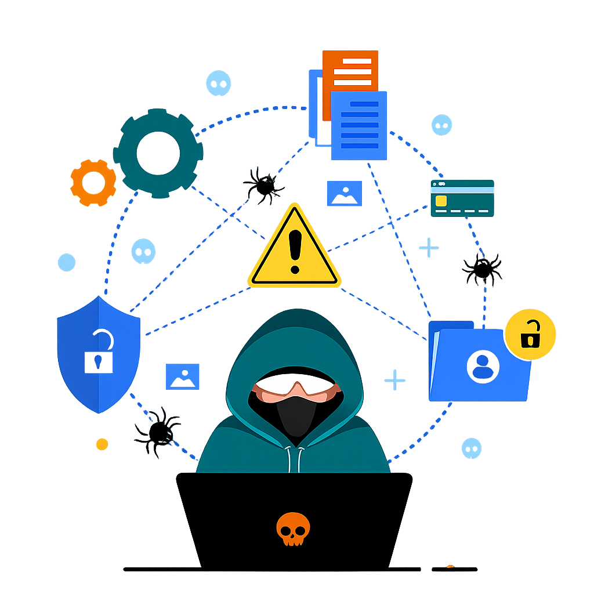

Como se proteger de ataques phishing
O phishing é uma técnica usada por criminosos para enganar usuários e roubar informações sensíveis, como senhas, dados bancários e códigos de verificação. Esses ataques geralmente acontecem por meio de links falsos enviados por e-mail, SMS ou redes sociais.
Boas práticas de segurança
- Verifique o link: passe o mouse e analise se o endereço é confiável.
- Desconfie de urgência: mensagens como “sua conta será bloqueada” são comuns em golpes.
- Não informe dados pessoais: empresas confiáveis não pedem senhas por mensagem.
- Confira a URL: verifique se o site começa com https://.
- Evite downloads suspeitos: arquivos podem conter vírus.
- Ative o 2FA: adiciona uma camada extra de segurança.
- Use ferramentas de verificação: analise links antes de acessar.
Exemplo de tentativa de phishing
“Olá, identificamos um acesso suspeito na sua conta. Clique no link abaixo e confirme seus dados imediatamente para evitar o bloqueio.”
Live ataques Cyber Mapas